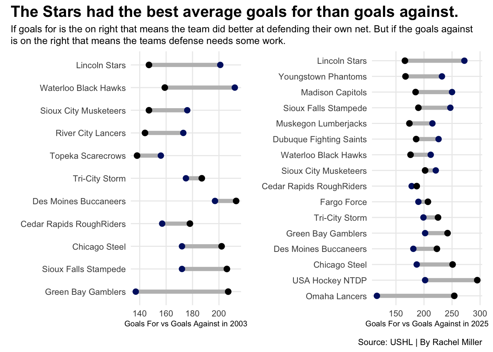
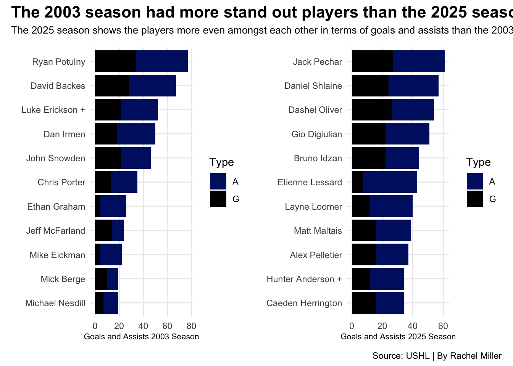
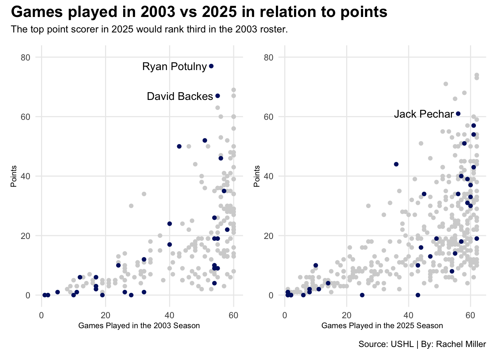

An Analysis of the 2002-03 vs 2024-25 Lincoln Stars
lincoln stars
ushl
hockey
Author
Rachel Miller
Published
April 24, 2025
The Lincoln Stars have had their best season and playoff season, they are the Anderson Cup winners and have made it to the third round of the Clark Cup Playoffs. The last time they won both Cups was the 2002-03 season. Since then, the team has slowly gotten worse over time and missed the playoffs for several years. If they did make it to the playoffs, they usually fell out during the first or second rounds.
What happened? Is there certain player(s) that are leading the team in points to get them back to the caliber they once were. Or are the teams in the USHL just not doing very well this season?
I am going to look at the teams in the USHL in the 2002-03 season and the teams from this season to see what happened to get the Stars to win the Anderson Cup and hopefully to bring the Clark Cup back to the Ice Box.
Code
library(tidyverse)library(gt)library(ggalt)library(ggtext)library(patchwork)library(ggrepel)masterushl <-read_csv("data/Master USHL spreadsheet - Sheet1.csv") master2003 <- masterushl |>filter(Year =="2003") |>filter(G >0) master2025 <- masterushl |>filter(Year =="2025") |>filter(G >0) gfvga2003 <-read_csv("data/Master USHL spreadsheet - Sheet2.csv") |>mutate(difference = GF - GA)gfvga2025 <-read_csv("data/Master USHL spreadsheet - Sheet3.csv") |>mutate(difference = GF - GA)cedarrapids2025 <- masterushl |>filter(Team =="Cedar Rapids") |>filter(Year =="2025")cedarrapids2003 <-masterushl |>filter(Year =="2003")dubuque <- masterushl |>filter(Team =="DBQ")lincoln2025 <- masterushl |>filter(Team =="LIN") |>filter(Year =="2025") name2025 <- lincoln2025 |>top_n(1)lincoln2003 <- masterushl |>filter(Team =="LIN") |>filter(Year =="2003")name2003 <- lincoln2003 |>top_n(2)omaha2025 <- masterushl |>filter(Team =="RC"| Team =="OMA" ) |>filter(Year =="2025")omaha2003 <- masterushl |>filter(Year =="2003")tricity2025 <- masterushl |>filter(Team =="Tri City") |>filter(Year =="2025")tricity2003 <- masterushl |>filter(Year =="2003")waterloo2025 <- masterushl |>filter(Team =="Waterloo"| Team =="WAT") |>filter(Year =="2025")waterloo2003 <- masterushl |>filter(Year =="2003")chicago2025 <- masterushl |>filter(Team =="Chicago Steel"| Team =="CHI") |>filter(Year =="2025")chicago2003 <- masterushl |>filter(Year =="2003")fargo <- masterushl |>filter(Team =="FGO")madison <- masterushl |>filter(Team =="Madison Caps")siouxcity2025 <- masterushl |>filter(Team =="Sioux City") |>filter(Year =="2025")siouxcity2003 <- masterushl |>filter(Year =="2003")USA <- masterushl |>filter(Team =="USAND")desmoines2025 <- masterushl |>filter(Team =="Des Moines"| Team =="DM") |>filter(Year =="2025")desmoines2003 <- masterushl |>filter(Year =="2003")greenbay2025 <- masterushl |>filter(Team =="Greenbay") |>filter(Year =="2025")greenbay2003 <- masterushl |>filter(Year =="2003")muskegon <- masterushl |>filter(Team =="MUS")youngstown <- masterushl |>filter(Team =="YNG")siouxfalls2025 <- masterushl |>filter(Team =="SF") |>filter(Year =="2025")siouxfalls2003 <- masterushl |>filter(Year =="2003")dumb1 <-ggplot() +geom_dumbbell(data = gfvga2003, aes(y=reorder(Team, difference), x=GF, xend=GA),size =2,colour ="grey", colour_x ="#001A70",colour_xend ="#010101" ) +labs(y="",x="Goals For vs Goals Against in 2003" ) +theme_minimal() dumb2 <-ggplot() +geom_dumbbell(data = gfvga2025,aes(y=reorder(Team, difference), x=GF, xend = GA), size =2,colour ="grey", colour_x ="#001A70",colour_xend ="#010101" ) +labs(y="",x="Goals For vs Goals Against in 2025" ) +theme_minimal() dumb1 + dumb2 +plot_annotation(title ="The Stars had the best average goals for than goals against.",subtitle ="If goals for is the on right that means the team did better at defending their own net. But if the goals against is on the right that means the teams defense needs some work.",caption ="Source: USHL | By Rachel Miller" ) &theme(plot.title =element_text(size =16, face ="bold"),axis.title =element_text(size =8), plot.subtitle =element_textbox_simple(size=10), panel.grid.minor =element_blank() )

During both the 2003 and 2025 season the Stars led the USHL in goals for rather than goals against. The Waterloo Blackhawsks was second to them in the average during 2003, in the league during the season the Blackhawks were first overall.
If the Stars had the best average goals for in both seasons, was there a stand out player this season and during the 2003 season.
Code
longlincoln2025 <- lincoln2025 |>top_n(10, wt=Pts) |>select('Player Name', G, A) |>pivot_longer(cols =-'Player Name', names_to ="Type",values_to ="number" ) longlincoln2003 <- lincoln2003 |>top_n(10, wt=Pts) |>select('Player Name', G, A) |>pivot_longer(cols =-'Player Name', names_to ="Type",values_to ="number" ) bar1 <-ggplot() +geom_bar(data=longlincoln2003, aes(x=reorder(`Player Name`,number), weight=number, fill=Type)) +scale_fill_manual(values=c("#001A70", "#010101")) +coord_flip() +labs(x="", y="Goals and Assists 2003 Season" ) +theme_minimal() bar2 <-ggplot() +geom_bar(data=longlincoln2025, aes(x=reorder(`Player Name`,number), weight=number, fill=Type)) +scale_fill_manual(values=c("#001A70", "#010101")) +coord_flip() +labs(x="", y="Goals and Assists 2025 Season" ) +theme_minimal() bar1 + bar2 +plot_annotation(title ="The 2003 season had more stand out players than the 2025 season.",subtitle ="The 2025 season shows the players more even amongst each other in terms of goals and assists than the 2003.",caption ="Source: USHL | By Rachel Miller" ) &theme(plot.title =element_text(size =16, face ="bold"),axis.title =element_text(size =8), plot.subtitle =element_text(size=10), panel.grid.minor =element_blank() )

This season shows the Anderson cup winners with a more even distribution between players with their goals and assists. Looking at the 2003 season, the team had two stand out players, Ryan Potulny and David Backes.
Ryan Potulny went on to be drafted by the Philadelphia Flyers in 2003. After three years in Philly he played for Edmonton, Chicago and finally Ottawa before becoming an assistant coach at the University of Minnesota.
David Backes was also drafted in the 2003 draft by the Saint Louis Blues. After playing for the Blues for 10 years he was traded to Boston and finally Anaheim. On September 9,2021 Backes signed a one-day contract with the Blues to officially retire with his first team.
We know that Potulny and Backes were the team’s top scores, but how does the 2025 roster compare.
Code
scatter1 <-ggplot() +geom_point(data = master2003, aes(x= GP, y= Pts), color="lightgrey") +geom_point(data = lincoln2003, aes(x= GP, y= Pts), color="#001A70") +geom_text_repel(data = name2003, aes(x=GP, y=Pts, label =`Player Name`)) +scale_y_continuous(breaks =c(0,20,40,60,80), limits =c(0,80)) +labs(x="Games Played in the 2003 Season",y="Points" ) +theme_minimal()scatter2 <-ggplot() +geom_point(data = master2025, aes(x= GP, y= Pts), color="lightgrey") +geom_point(data = lincoln2025, aes(x= GP, y= Pts), color="#001A70") +geom_text_repel(data = name2025, aes(x=GP, y=Pts, label =`Player Name`)) +scale_y_continuous(breaks =c(0,20,40,60,80), limits =c(0,80)) +labs(x="Games Played in the 2025 Season",y="Points" ) +theme_minimal()scatter1 + scatter2 +plot_annotation(title ="Games played in 2003 vs 2025 in relation to points",subtitle ="The top point scorer in 2025 would rank third in the 2003 roster.", caption ="Source: USHL | By: Rachel Miller" ) &theme(plot.title =element_text(size =16, face ="bold"),axis.title =element_text(size =8),plot.subtitle =element_text(size =10), panel.grid.minor =element_blank() )

Only one player on this season’s team would compare to the 2003 roster. Even then Jack Pechar, an assistant captain, would only rank third in comparison to Potulny and Backes. Pechar has played in his last game with the stars after three years with the team. He will now go on to play for Northeastern University with his Captain Matthew Maltais, who from the graph above ranked eighth in goals and assists.
Unfortunately the stars have ended their season against the Waterloo Blackhawks in a 3-1 series. Their last two games, both were away, they lost in a shut out, 5-0 and 2-0 respectively.